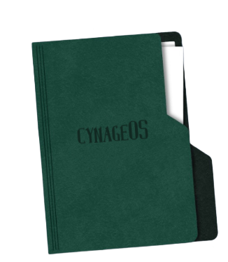

Legend
| Symbols | Meaning |
|---|---|
| <> | 1st page |
| << | Parent page |
| 🧷 | Link to a page |
| Keybinding | action |
|---|---|
| ctrl + / (?) | This dialog box |
| alt + <- (left arrow) |
Previously visited page |
| I | Index menu |
Sick of the incosistancy in windows 10, I started my journey in Linux in early 2020.
As a beginner I started with Ubuntu as that was the only linux distrubution I knew about. I had found my Dad's old cd with Ubuntu 18.04,
installed it but then found out about 20.04 and installed it.
I realled loved the coustomization part of Linux to a point where it created a major foundation in my intrest in UI/UX.
Slowly distro hopping and understanding Kernel, Distributions, OperatingSystems, Applications,
Binaries led me to want to make my own Distribution.
CynageOSv1 started as a set of configs for Hyprland with waybar.
Now with rust it has its own shell (Capsule) and set of applications that make up the "ecosystem".

Basil documentatin comming
PickelBerry documentation commin
Folder 4 content here.
Folder 5 content here.
Run Capsulator installation script from releases Script
read documentation for more info
/ (root) ├── etc │ └── systemd → logind.conf (power button config) ├── home │ └── user │ ├── .config │ │ ├── alt → key.dat (api key for alterAi) | | | └── markers → notes.algae │ │ ├── capsule → dark.css | | | → light.css | | | → style.css │ │ ├── dunst → dunstrc │ │ ├── htop → htoprc │ │ ├── hypr → animations.conf | | | | → hyprland.conf | | | | → keybindings.conf | | | | → monitors.conf | | | | → nvidia.conf | | | | → pyprland.toml | | | | → startup.conf | | | | → windowrules.conf │ │ │ ├── themes → cynage.conf | | | | → lightage.conf | | | | → theme.conf │ │ │ ├── sound | | | | ├── notiv → notiv.mp3 | | | | └── startup → default.mp3 | | | | → game-menu.mp3 | | | | → game-start.mp3 | | | | → spatial.mp3 │ │ │ └── scripts → batterynotify.sh │ │ │ → blurwall.sh │ │ │ → brightness.py │ │ │ → resetxdgportal.sh │ │ │ → swwwallbash.sh │ │ │ → swwwallpaper.sh │ │ ├── kitty → kitty.conf │ │ │ └── themes → cynage.conf │ │ │ → lightage.conf │ │ │ → theme.conf │ │ ├── kvantum → kvantum.kvconfig │ │ │ ├── cynage (see more from cynageOS repo) │ │ │ └── lightage (see more from cynageOS repo) │ │ ├── neofetch │ │ │ ├── gifs │ │ │ └── pngs │ │ ├── qt5ct │ │ │ ├── colors │ │ │ └── qss │ │ ├── qt6ct │ │ │ ├── colors │ │ │ └── qss │ │ └── swww → wall.ctl | | ├── .cache (cached wallpapers) │ │ └── cynage (all wallpapers) │ ├── .icons → cynide │ └── .themes │ ├── cynage │ └── lightage ├── opt │ └── PickleBerry → pbfm │ └── src → berry_picker (drag and drop module) ├── root │ └── usr │ ├── bin → Alt Launcher │ │ → Battery indicator │ │ → Calibrate │ │ → capsule shell │ │ → Clipper | | → cynagectl (from cynageOS repo) │ │ → Octobacillus │ │ → Octobacilluscus │ │ → PowerCynaide │ │ → welp (from cynageOS repo) │ └── share │ └── octobacillus → bg.png │ → user.octo ├── tmp → notiv.dat (notifications) ├── usr │ └── share │ └── icons │ └── cursor-theme └── var └── lib ├── cynager → info.probe (version information) │ → ql.dat (quick links information) └── desktop → widgets.dat (desktop widgets information)
welp is the introduction software written for cynageOS to help first time users with getting to know with the operating system and its
ecosystem.
It is also used to show changlogs after an update
cynagectl is a utility for controlling some parts of the operating system from a CLI.
It creates a base for calibrate to funtion.
And is also used to copnfigure the shell.